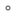

<!doctype html>
<html lang="en">
    <head>
        <meta charset="utf-8">
        <meta http-equiv="X-UA-Compatible" content="IE=edge">
        <meta name="viewport" content="initial-scale=1,user-scalable=no,maximum-scale=1,width=device-width">
        <meta name="mobile-web-app-capable" content="yes">
        <meta name="apple-mobile-web-app-capable" content="yes">
        <link rel="stylesheet" href="css/leaflet.css">
        <link rel="stylesheet" href="css/L.Control.Layers.Tree.css">
        <link rel="stylesheet" href="css/L.Control.Locate.min.css">
        <link rel="stylesheet" href="css/qgis2web.css">
        <link rel="stylesheet" href="css/fontawesome-all.min.css">
        <link rel="stylesheet" href="css/leaflet-control-geocoder.Geocoder.css">
        <link rel="stylesheet" href="css/leaflet-measure.css">
        <style>
        html, body, #map {
            width: 100%;
            height: 100%;
            padding: 0;
            margin: 0;
        }
        </style>
        <title></title>
    </head>
    <body>
        <div id="map">
        </div>
        <script src="js/qgis2web_expressions.js"></script>
        <script src="js/leaflet.js"></script>
        <script src="js/L.Control.Layers.Tree.min.js"></script>
        <script src="js/L.Control.Locate.min.js"></script>
        <script src="js/leaflet.rotatedMarker.js"></script>
        <script src="js/leaflet.pattern.js"></script>
        <script src="js/leaflet-hash.js"></script>
        <script src="js/Autolinker.min.js"></script>
        <script src="js/rbush.min.js"></script>
        <script src="js/labelgun.min.js"></script>
        <script src="js/labels.js"></script>
        <script src="js/leaflet-control-geocoder.Geocoder.js"></script>
        <script src="js/leaflet-measure.js"></script>
        <script src="data/SantiagoCityBarangayBoundaries_1.js"></script>
        <script src="data/SantiagoCity_2.js"></script>
        <script src="data/Corner_3.js"></script>
        <script>
        var map = L.map('map', {
            zoomControl:true, maxZoom:28, minZoom:1
        })
        var hash = new L.Hash(map);
        map.attributionControl.setPrefix('<a href="https://github.com/tomchadwin/qgis2web" target="_blank">qgis2web</a> &middot; <a href="https://leafletjs.com" title="A JS library for interactive maps">Leaflet</a> &middot; <a href="https://qgis.org">QGIS</a>');
        var autolinker = new Autolinker({truncate: {length: 30, location: 'smart'}});
        function removeEmptyRowsFromPopupContent(content, feature) {
         var tempDiv = document.createElement('div');
         tempDiv.innerHTML = content;
         var rows = tempDiv.querySelectorAll('tr');
         for (var i = 0; i < rows.length; i++) {
             var td = rows[i].querySelector('td.visible-with-data');
             var key = td ? td.id : '';
             if (td && td.classList.contains('visible-with-data') && feature.properties[key] == null) {
                 rows[i].parentNode.removeChild(rows[i]);
             }
         }
         return tempDiv.innerHTML;
        }
        document.querySelector(".leaflet-popup-pane").addEventListener("load", function(event) {
          var tagName = event.target.tagName,
            popup = map._popup;
          // Also check if flag is already set.
          if (tagName === "IMG" && popup && !popup._updated) {
            popup._updated = true; // Set flag to prevent looping.
            popup.update();
          }
        }, true);
        L.control.locate({locateOptions: {maxZoom: 19}}).addTo(map);
        var measureControl = new L.Control.Measure({
            position: 'topleft',
            primaryLengthUnit: 'meters',
            secondaryLengthUnit: 'kilometers',
            primaryAreaUnit: 'sqmeters',
            secondaryAreaUnit: 'hectares'
        });
        measureControl.addTo(map);
        document.getElementsByClassName('leaflet-control-measure-toggle')[0]
        .innerHTML = '';
        document.getElementsByClassName('leaflet-control-measure-toggle')[0]
        .className += ' fas fa-ruler';
        var bounds_group = new L.featureGroup([]);
        function setBounds() {
            if (bounds_group.getLayers().length) {
                map.fitBounds(bounds_group.getBounds());
            }
        }
        map.createPane('pane_GoogleHybrid_0');
        map.getPane('pane_GoogleHybrid_0').style.zIndex = 400;
        var layer_GoogleHybrid_0 = L.tileLayer('https://mt1.google.com/vt/lyrs=y&x={x}&y={y}&z={z}', {
            pane: 'pane_GoogleHybrid_0',
            opacity: 1.0,
            attribution: '<a href="https://www.google.at/permissions/geoguidelines/attr-guide.html">Map data ©2015 Google</a>',
            minZoom: 1,
            maxZoom: 28,
            minNativeZoom: 0,
            maxNativeZoom: 20
        });
        layer_GoogleHybrid_0;
        map.addLayer(layer_GoogleHybrid_0);
        function pop_SantiagoCityBarangayBoundaries_1(feature, layer) {
            var popupContent = '<table>\
                    <tr>\
                        <th scope="row">ADM4_EN</th>\
                        <td class="visible-with-data" id="ADM4_EN">' + (feature.properties['ADM4_EN'] !== null ? autolinker.link(feature.properties['ADM4_EN'].toLocaleString()) : '') + '</td>\
                    </tr>\
                    <tr>\
                        <td colspan="2">' + (feature.properties['ADM3_EN'] !== null ? autolinker.link(feature.properties['ADM3_EN'].toLocaleString()) : '') + '</td>\
                    </tr>\
                    <tr>\
                        <td colspan="2">' + (feature.properties['ADM2_EN'] !== null ? autolinker.link(feature.properties['ADM2_EN'].toLocaleString()) : '') + '</td>\
                    </tr>\
                    <tr>\
                        <td colspan="2">' + (feature.properties['ADM1_EN'] !== null ? autolinker.link(feature.properties['ADM1_EN'].toLocaleString()) : '') + '</td>\
                    </tr>\
                </table>';
            layer.bindPopup(popupContent, {maxHeight: 400});
            var popup = layer.getPopup();
            var content = popup.getContent();
            var updatedContent = removeEmptyRowsFromPopupContent(content, feature);
            popup.setContent(updatedContent);
        }

        function style_SantiagoCityBarangayBoundaries_1_0() {
            return {
                pane: 'pane_SantiagoCityBarangayBoundaries_1',
                opacity: 1,
                color: 'rgba(228,26,28,0.5019607843137255)',
                dashArray: '',
                lineCap: 'square',
                lineJoin: 'bevel',
                weight: 2.0,
                fillOpacity: 0,
                interactive: true,
            }
        }
        map.createPane('pane_SantiagoCityBarangayBoundaries_1');
        map.getPane('pane_SantiagoCityBarangayBoundaries_1').style.zIndex = 401;
        map.getPane('pane_SantiagoCityBarangayBoundaries_1').style['mix-blend-mode'] = 'normal';
        var layer_SantiagoCityBarangayBoundaries_1 = new L.geoJson(json_SantiagoCityBarangayBoundaries_1, {
            attribution: '',
            interactive: true,
            dataVar: 'json_SantiagoCityBarangayBoundaries_1',
            layerName: 'layer_SantiagoCityBarangayBoundaries_1',
            pane: 'pane_SantiagoCityBarangayBoundaries_1',
            onEachFeature: pop_SantiagoCityBarangayBoundaries_1,
            style: style_SantiagoCityBarangayBoundaries_1_0,
        });
        bounds_group.addLayer(layer_SantiagoCityBarangayBoundaries_1);
        map.addLayer(layer_SantiagoCityBarangayBoundaries_1);
        function pop_SantiagoCity_2(feature, layer) {
            var popupContent = '<table>\
                    <tr>\
                        <td colspan="2">' + (feature.properties['fid'] !== null ? autolinker.link(feature.properties['fid'].toLocaleString()) : '') + '</td>\
                    </tr>\
                    <tr>\
                        <td colspan="2">' + (feature.properties['ADM3_EN'] !== null ? autolinker.link(feature.properties['ADM3_EN'].toLocaleString()) : '') + '</td>\
                    </tr>\
                    <tr>\
                        <td colspan="2">' + (feature.properties['ADM3_PCODE'] !== null ? autolinker.link(feature.properties['ADM3_PCODE'].toLocaleString()) : '') + '</td>\
                    </tr>\
                    <tr>\
                        <td colspan="2">' + (feature.properties['ADM2_EN'] !== null ? autolinker.link(feature.properties['ADM2_EN'].toLocaleString()) : '') + '</td>\
                    </tr>\
                    <tr>\
                        <td colspan="2">' + (feature.properties['ADM2_PCODE'] !== null ? autolinker.link(feature.properties['ADM2_PCODE'].toLocaleString()) : '') + '</td>\
                    </tr>\
                    <tr>\
                        <td colspan="2">' + (feature.properties['ADM1_EN'] !== null ? autolinker.link(feature.properties['ADM1_EN'].toLocaleString()) : '') + '</td>\
                    </tr>\
                    <tr>\
                        <td colspan="2">' + (feature.properties['ADM1_PCODE'] !== null ? autolinker.link(feature.properties['ADM1_PCODE'].toLocaleString()) : '') + '</td>\
                    </tr>\
                    <tr>\
                        <td colspan="2">' + (feature.properties['ADM_ID'] !== null ? autolinker.link(feature.properties['ADM_ID'].toLocaleString()) : '') + '</td>\
                    </tr>\
                    <tr>\
                        <td colspan="2">' + (feature.properties['UPDATED'] !== null ? autolinker.link(feature.properties['UPDATED'].toLocaleString()) : '') + '</td>\
                    </tr>\
                    <tr>\
                        <td colspan="2">' + (feature.properties['PERIMETER'] !== null ? autolinker.link(feature.properties['PERIMETER'].toLocaleString()) : '') + '</td>\
                    </tr>\
                    <tr>\
                        <td colspan="2">' + (feature.properties['AREA'] !== null ? autolinker.link(feature.properties['AREA'].toLocaleString()) : '') + '</td>\
                    </tr>\
                    <tr>\
                        <td colspan="2">' + (feature.properties['LONGITUDE'] !== null ? autolinker.link(feature.properties['LONGITUDE'].toLocaleString()) : '') + '</td>\
                    </tr>\
                    <tr>\
                        <td colspan="2">' + (feature.properties['LATITUDE'] !== null ? autolinker.link(feature.properties['LATITUDE'].toLocaleString()) : '') + '</td>\
                    </tr>\
                </table>';
            layer.bindPopup(popupContent, {maxHeight: 400});
            var popup = layer.getPopup();
            var content = popup.getContent();
            var updatedContent = removeEmptyRowsFromPopupContent(content, feature);
            popup.setContent(updatedContent);
        }

        function style_SantiagoCity_2_0() {
            return {
                pane: 'pane_SantiagoCity_2',
                opacity: 1,
                color: 'rgba(53,121,177,0.7294117647058823)',
                dashArray: '',
                lineCap: 'square',
                lineJoin: 'bevel',
                weight: 4.0,
                fillOpacity: 0,
                interactive: false,
            }
        }
        map.createPane('pane_SantiagoCity_2');
        map.getPane('pane_SantiagoCity_2').style.zIndex = 402;
        map.getPane('pane_SantiagoCity_2').style['mix-blend-mode'] = 'normal';
        var layer_SantiagoCity_2 = new L.geoJson(json_SantiagoCity_2, {
            attribution: '',
            interactive: false,
            dataVar: 'json_SantiagoCity_2',
            layerName: 'layer_SantiagoCity_2',
            pane: 'pane_SantiagoCity_2',
            onEachFeature: pop_SantiagoCity_2,
            style: style_SantiagoCity_2_0,
        });
        bounds_group.addLayer(layer_SantiagoCity_2);
        map.addLayer(layer_SantiagoCity_2);
        function pop_Corner_3(feature, layer) {
            var popupContent = '<table>\
                    <tr>\
                        <th scope="row">Latitude</th>\
                        <td class="visible-with-data" id="Latitude">' + (feature.properties['Latitude'] !== null ? autolinker.link(feature.properties['Latitude'].toLocaleString()) : '') + '</td>\
                    </tr>\
                    <tr>\
                        <th scope="row">Longitude</th>\
                        <td class="visible-with-data" id="Longitude">' + (feature.properties['Longitude'] !== null ? autolinker.link(feature.properties['Longitude'].toLocaleString()) : '') + '</td>\
                    </tr>\
                </table>';
            layer.bindPopup(popupContent, {maxHeight: 400});
            var popup = layer.getPopup();
            var content = popup.getContent();
            var updatedContent = removeEmptyRowsFromPopupContent(content, feature);
            popup.setContent(updatedContent);
        }

        function style_Corner_3_0() {
            return {
                pane: 'pane_Corner_3',
                radius: 2.0000000000000004,
                opacity: 1,
                color: 'rgba(0,0,0,0.5176470588235295)',
                dashArray: '',
                lineCap: 'butt',
                lineJoin: 'miter',
                weight: 2.0,
                fill: true,
                fillOpacity: 1,
                fillColor: 'rgba(255,255,255,1.0)',
                interactive: true,
            }
        }
        map.createPane('pane_Corner_3');
        map.getPane('pane_Corner_3').style.zIndex = 403;
        map.getPane('pane_Corner_3').style['mix-blend-mode'] = 'normal';
        var layer_Corner_3 = new L.geoJson(json_Corner_3, {
            attribution: '',
            interactive: true,
            dataVar: 'json_Corner_3',
            layerName: 'layer_Corner_3',
            pane: 'pane_Corner_3',
            onEachFeature: pop_Corner_3,
            pointToLayer: function (feature, latlng) {
                var context = {
                    feature: feature,
                    variables: {}
                };
                return L.circleMarker(latlng, style_Corner_3_0(feature));
            },
        });
        bounds_group.addLayer(layer_Corner_3);
        map.addLayer(layer_Corner_3);
        var osmGeocoder = new L.Control.Geocoder({
            collapsed: true,
            position: 'topleft',
            text: 'Search',
            title: 'Testing'
        }).addTo(map);
        document.getElementsByClassName('leaflet-control-geocoder-icon')[0]
        .className += ' fa fa-search';
        document.getElementsByClassName('leaflet-control-geocoder-icon')[0]
        .title += 'Search for a place';
        var baseMaps = {};
        var overlaysTree = [
            {label: ' Corner', layer: layer_Corner_3},
            {label: ' Santiago City', layer: layer_SantiagoCity_2},
            {label: ' Santiago City Barangay Boundaries', layer: layer_SantiagoCityBarangayBoundaries_1},
            {label: "Google Hybrid", layer: layer_GoogleHybrid_0},]
        var lay = L.control.layers.tree(null, overlaysTree,{
            //namedToggle: true,
            //selectorBack: false,
            //closedSymbol: '&#8862; &#x1f5c0;',
            //openedSymbol: '&#8863; &#x1f5c1;',
            //collapseAll: 'Collapse all',
            //expandAll: 'Expand all',
            collapsed: false, 
        });
        lay.addTo(map);
        setBounds();
        var i = 0;
        layer_SantiagoCityBarangayBoundaries_1.eachLayer(function(layer) {
            var context = {
                feature: layer.feature,
                variables: {}
            };
            layer.bindTooltip((layer.feature.properties['ADM4_EN'] !== null?String('<div style="color: #ffffff; font-size: 7pt; font-family: \'Open Sans\', sans-serif;">' + layer.feature.properties['ADM4_EN']) + '</div>':''), {permanent: true, offset: [-0, -16], className: 'css_SantiagoCityBarangayBoundaries_1'});
            labels.push(layer);
            totalMarkers += 1;
              layer.added = true;
              addLabel(layer, i);
              i++;
        });
        resetLabels([layer_SantiagoCityBarangayBoundaries_1,layer_SantiagoCity_2]);
        map.on("zoomend", function(){
            resetLabels([layer_SantiagoCityBarangayBoundaries_1,layer_SantiagoCity_2]);
        });
        map.on("layeradd", function(){
            resetLabels([layer_SantiagoCityBarangayBoundaries_1,layer_SantiagoCity_2]);
        });
        map.on("layerremove", function(){
            resetLabels([layer_SantiagoCityBarangayBoundaries_1,layer_SantiagoCity_2]);
        });
        </script>
    </body>
</html>
